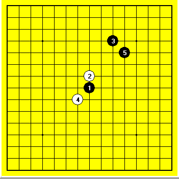

无禁刀 这个局面白优还是黑优 ----无禁妖刀
#1 无禁刀 这个局面白优还是黑优 ----无禁妖刀 作者：wrwak 发表时间：2008-12-1 12:57:11
我认为白棋不好下
这个4手必败
#2 Re:来来来 大刀无禁手 这个局面白优还是黑优 作者：失落刀 发表时间：2008-12-1 12:59:53
无禁手没研究过。楼主高，已经向无禁进军了。
听闻真心对无禁也有研究。
#3 Re:来来来 大刀无禁手 这个局面白优还是黑优 作者：wrwak 发表时间：2008-12-1 13:03:18
这个妖刀 高一很多下的#4 Re:来来来 大刀无禁手 这个局面白优还是黑优 作者：wrwak 发表时间：2008-12-1 13:05:22
我猜想这个黑必胜 但是一定会拖到50手#5 Re:来来来 大刀无禁手 这个局面白优还是黑优 作者：失落刀 发表时间：2008-12-1 13:07:40
既然如此热门，有空了就研究下。
6走1的左边？
我还是不研究了，浪费时间。
还有，黑是不是也可以长连胜？
#6 Re:来来来 大刀无禁手 这个局面白优还是黑优 作者：wrwak 发表时间：2008-12-1 13:24:01
白棋想进攻都要被活三在作反#7 Re:来来来 大刀无禁手 这个局面白优还是黑优 作者：wrwak 发表时间：2008-12-1 13:24:40
可以下长链的#8 Re:来来来 大刀无禁手 这个局面白优还是黑优 作者：许相公 发表时间：2008-12-4 10:12:15
想问一下楼主,你下的这个开局用的是无禁的规则还是RIF的规则?
#9 Re:来来来 大刀无禁手 这个局面白优还是黑优 作者：wrwak 发表时间：2008-12-4 14:59:16
民间五子棋 连5即可#10 Re:来来来 大刀无禁手 这个局面白优还是黑优 作者：许相公 发表时间：2008-12-5 8:20:30
我和别人下这种超级大刀开局的时候一般都是黑棋无禁手，白棋只能四三胜
#11 Re:来来来 大刀无禁手 这个局面白优还是黑优 ----无禁妖刀 作者：失落刀 发表时间：2008-12-9 23:06:44
相公兄对无禁很有研究的啊，楼主的问题，希望无禁的各位朋友跟帖，我们学习。#12 Re:来来来 无禁刀 这个局面白优还是黑优 ----无禁妖刀 作者：wrwak 发表时间：2009-2-14 10:39:59
目前这个刀是黑优 白棋肯定没胜#13 Re:来来来 无禁刀 这个局面白优还是黑优 ----无禁妖刀 作者：xr__ 发表时间：2009-2-16 20:28:29
黑胜#14 Re:来来来 无禁刀 这个局面白优还是黑优 ----无禁妖刀 作者：耳痛 发表时间：2009-2-17 0:56:35
这个开局模仿者太多了 真正懂的 深入拆的人不多#15 Re:来来来 无禁刀 这个局面白优还是黑优 ----无禁妖刀 作者：wrwak 发表时间：2009-3-16 16:27:02
许相公只对新名词有研究
#16 Re:无禁刀 这个局面白优还是黑优 ----无禁妖刀 作者：wrwak 发表时间：2009-3-22 20:07:03
=======上图对应的爱五子棋谱代码如下，以便你拆解：========
h8h9j12j10g10
======================================================
=======上图对应的爱五子棋谱代码如下，以便你拆解：========
h8h9j12i10g9
======================================================
=======上图对应的爱五子棋谱代码如下，以便你拆解：========
h8h9j12i9g9
======================================================
=======上图对应的爱五子棋谱代码如下，以便你拆解：========
h8h9j12g10i8
======================================================
［本站用户 失落刀 于 2009-3-22 20:35:52 花5个金币送您鲜花一朵］
#17 Re:无禁刀 这个局面白优还是黑优 ----无禁妖刀 作者：wrwak 发表时间：2009-3-22 20:07:28
比较强的应法 参考#18 Re:无禁刀 这个局面白优还是黑优 ----无禁妖刀 作者：wrwak 发表时间：2009-3-22 21:06:25
=======上图对应的爱五子棋谱代码如下，以便你拆解：========
h8h9j12g9f9
======================================================
=======上图对应的爱五子棋谱代码如下，以便你拆解：========
h8h9j12g9j10
======================================================
=======上图对应的爱五子棋谱代码如下，以便你拆解：========
h8h9j12g9i9
======================================================
#19 Re:无禁刀 这个局面白优还是黑优 ----无禁妖刀 作者：wrwak 发表时间：2009-3-22 21:07:53
第一图是取外势的下法
第二图是对攻下法
第三图是平缓的下法
#20 Re:无禁刀 这个局面白优还是黑优 ----无禁妖刀 作者：xr__ 发表时间：2009-4-24 19:56:15
以上各图 怎么看都觉得黑舒服